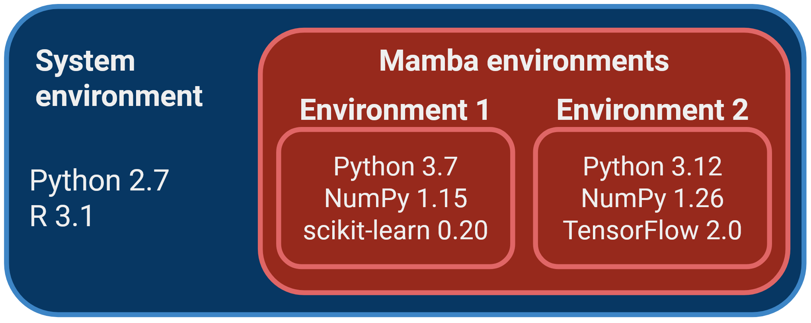

3 Package Managers
These materials are still under development
- Describe the role of a package manager and list examples of package managers for different applications.
- Recognise the challenges in managing complex software environments and the role of the Conda/Mamba package manager in solving these.
- Create and use reproducible software environments using Mamba.
- Recognise some of limitations of Mamba as a package manager and how to avoid common pitfalls.
3.1 What is a package manager?
Most operating systems have package managers available, which allow the user to manage (install, remove, upgrade) their software easily. The package manager takes care of automatically downloading and installing the software we want, as well as any dependencies it requires.

There are many package managers available, some are specific to a given type of operating system, or specific to a programming language, while others are more generic. Each of these package managers will use their own repositories, meaning they have access to different sets of software (although there is often some overlap). Some examples include:
aptis the default Linux package manager for Debian-derived distributions, such as the popular Ubuntu. It comes pre-installed and can be used to install system-level applications.homebrewis a popular package manager for macOS, although it also works on Linux.conda/mambais a package manager very popular in bioinformatics and data science communities, due to the repositories which give access to software used in these fields. It will be the main focus of this section.
Some programming languages also come with their own package managers. For example:
- The statistical software R has two main library repositories: CRAN and Bioconductor. These are installed from within the R console using the commands
install.packages()andBiocManager::install(), respectively. - The programming laguage Python has a package manager called
pip, which has access to the Python Package Index (PyPI) repository.
In many cases package managers can also install software directly from code repositories such as GitHub, adding further flexibility to how we manage our scientific software.
3.2 Conda/Mamba
A popular package manager in data science, scientific computing and bioinformatics is Mamba, which is a successor to another package manager called Conda.
Conda was originally developed by Anaconda as a way to simplify the creation, distribution, and management of software environments containing different packages and dependencies. It is known for its cross-platform compatibility and relative ease of use (compared to compiling software and having the user manually install all software dependencies). Mamba is a more recent and high-performance alternative to Conda. While it maintains compatibility with Conda’s package and environment management capabilities, Mamba is designed for faster dependency resolution and installation, making it a better choice nowadays. Therefore, the rest of this section focuses on Mamba specifically.
One of the strengths of using Mamba to manage your software is that you can have different versions of your software installed alongside each other, organised in environments. Organising software packages into environments is extremely useful, as it allows to have a reproducible set of software versions that you can use and reuse in your projects.
For example, imagine you are working on two projects with different software requirements:
- Project A: requires Python 3.7, NumPy 1.15, and scikit-learn 0.20.
- Project B: requires Python 3.12, the latest version of NumPy, and TensorFlow 2.0.
If you don’t use environments, you would need to install and maintain these packages globally on your system. This can lead to several issues:
- Version conflicts: different projects may require different versions of the same library. For example, Project A might not be compatible with the latest NumPy, while Project B needs it.
- Dependency chaos: as your projects grow, you might install numerous packages, and they could interfere with each other, causing unexpected errors or instability.
- Difficulty collaborating: sharing your code with colleagues or collaborators becomes complex because they may have different versions of packages installed, leading to compatibility issues.

Mamba allows you to create self-contained software environments for each project, addressing these issues:
- Isolation: you can create a separate environment for each project. This ensures that the dependencies for one project don’t affect another.
- Software versions: you can specify the exact versions of libraries and packages required for each project within its environment. This eliminates version conflicts and ensures reproducibility.
- Ease of collaboration: sharing your code and environment file makes it easy for collaborators to replicate your environment and run your project without worrying about conflicts.
- Simplified maintenance: if you need to update a library for one project, it won’t impact others. You can manage environments separately, making maintenance more straightforward.
Another advantage of using Mamba is that the software is installed locally (by default in your home directory), without the need for admin (sudo) permissions.
3.2.1 Installing software with Mamba
You can search for available packages from the anaconda.org website. Packages are organised into “channels”, which represent communities that develop and maintain the installation “recipes” for each software. The most popular channels for bioinformatics and data analysis are “bioconda” and “conda-forge”.
There are three main commands to use with Mamba:
mamba create -n ENVIRONMENT-NAME: this command creates a new software environment, which can be named as you want. Usually people name their environments to either match the name of the main package they are installing there (e.g. an environment calledpangolinif it’s to install the Pangolin software). Or, if you are installing several packages in the same environment, then you can name it as a topic (e.g. an environment calledrnaseqif it contains several packages for RNA-seq data analysis).mamba install -n ENVIRONMENT-NAME NAME-OF-PACKAGE: this command installs the desired package in the specified environment.mamba activate ENVIRONMENT-NAME: this command “activates” the environment, which means the software installed there becomes available from the terminal.
Let’s see a concrete example. If we wanted to install packages for phylogenetic analysis, we could do:
# create an environment named "phylo"
mamba create -n phylo
# install some software in that environment
mamba install -n phylo iqtree==2.3.3 mafft==7.525If we run the command:
mamba env listWe will get a list of environments we created, and “phylo” should be listed there. If we want to use the software we installed in that environment, then we can activate it:
mamba activate phyloAnd usually this changes your terminal to have the word (phylo) at the start of your prompt instead of (base).
3.2.2 Environment files
Although we can create and manage environments as shown above, it may sometimes be useful to specify an environment in a file. This is particularly useful if you want to document how your environment was created and if you want to recreate it somewhere else.
Environments can be defined using a specification file in YAML format (a simple text format often used for configuration files). For example, our phylogenetics environment above could be specified as follows:
name: phylo
channels:
- conda-forge
- bioconda
dependencies:
- iqtree==2.3.3
- mafft==7.525We have included this example in the file demo/envs/phylo.yml. To create the environment from the file, we can use the command:
mamba env create -f envs/phylo.ymlIf you later decide to update the environment, either by adding a new software or by updating the software versions, you can run the command:
mamba env update -f envs/phylo.ymlYou can practice this in an exercise below.
3.3 Disadvantages and pitfalls
One thing to be very careful about is how Conda/Mamba manages the dependency graph of packages to install. If you don’t specify the version of the software you want, in theory Mamba will pick the latest version available on the channel. However, this is conditional on the other packages that are installed alongside it, as some versions may be incompatible with each other, it may downgrade some packages without you realising.
Take this example, where we create a new environment called metagen with some software for metagenomic analysis:
mamba create -n metagen multiqc bowtie2 metaphlanAt the time of writing, the latest version of metaphlan on anaconda.org is 4.1.0, however as we run this command we can see that Mamba is installing version 4.0.6.
Let’s be more explicit and specify we want the latest versions available of all three packages (at the time of writing):
mamba create -n metagen multiqc==1.21 bowtie2==2.5.3 metaphlan==4.1.0By running this command, we get an error message informing us that Mamba could not find a fully compatible environment for all these three software versions:
Could not solve for environment specs
The following packages are incompatible
... followed by a ridiculously long message explanining the sofware incompatibilities ...How would we solve this problem? One possibility is to install each software in a separate environment. The disadvantage is that you will need to run several mamba activate commands at every step of your analysis.
Another possibility is to find a compatible combination of package versions that is sufficient for your needs. For example, let’s say that metaphlan was the most critical software for which we needed to run the latest version. We could find what versions of the other two packages are compatible with it, by forcing its version, but not the version of the other two:
mamba create -n metagen multiqc bowtie2 metaphlan==4.1.0Running this command, we can see that we would get bowtie2==2.5.1 and multiqc==1.21. So, bowtie would be a slightly older version than currently available. But if we were happy with this choice, then we could proceed. For reproducibility, we could save all this information in a YAML file specifying our environment:
name: metagen
channels:
- conda-forge
- bioconda
dependencies:
- bowtie==2.5.1
- multiqc==1.21
- metaphlan==4.1.0There might be times when some packages/libraries are not available in a package manager. For example, it can be common to use conda/mamba but find a python library that is only available through pip. Unfortunately, this may cause issues in your environment as pip may change your conda-installed packages, which might break the conda environment. There are a few steps one can follow to avoid this pitfalls:
- Start from a new and clean environment. If the new environment break you can safely remove it and start over. You can create a new environment from pre-existing ones if necessary. We will see more of this later.
- Install
pipin your conda environment. This is important as the pip you have in your base environment is different from your new environment (will avoid conflicts). - Install any conda packages your need to get the environment ready and leave the pip install for last. Avoid switching between package managers. Start with one and finish with the other one so reversing or fixing conflicts is easier.
You can find a (checklist)[https://www.anaconda.com/blog/using-pip-in-a-conda-environment] in the anaconda webpage for good practice.
3.4 Exercises
3.5 Summary
- A package manager automates the process of installing, upgrading, configuring, and managing software packages, including their dependencies.
- Examples of package managers are
pip(Python),apt(Debian/Ubuntu) andconda/mamba(generic). - Dependency conflicts, which often arise in complex bioinformatic workflows, can be resolved by managing software in isolated environments.
- Conda/Mamba simplify these tasks by managing dependencies, creating isolated environments, and ensuring reproducible setups across different systems.
- Key Mamba commands include:
mamba create --name ENVIRONMENT-NAMEto create a new environment.mamba install -n ENVIRONMENT-NAME NAME-OF-PACKAGEto install a package inside that environment.mamba activate ENVIRONMENT-NAMEto make the software from that environment available.mamba env create -f ENVIRONMENT-YAML-SPECIFICATIONto create an environment from a YAML file (recommended for reproducibility).mamba env update -f ENVIRONMENT-YAML-SPECIFICATIONto update an environment from a YAML file (recommended for reproducibility).
- Recognise some of limitations of Mamba as a package manager and how to avoid common pitfalls.
- There are some disadvantages/limitations of Mamba as a package manager:
- Dependencies aren’t always respected.
- Software versions are sometimes downgraded without explicit warning.
- It can be slow at resolving very complex environments.